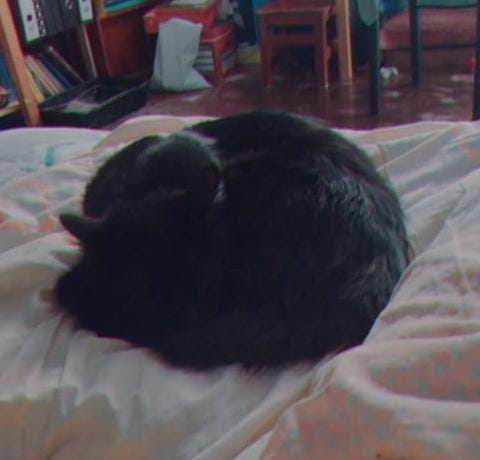
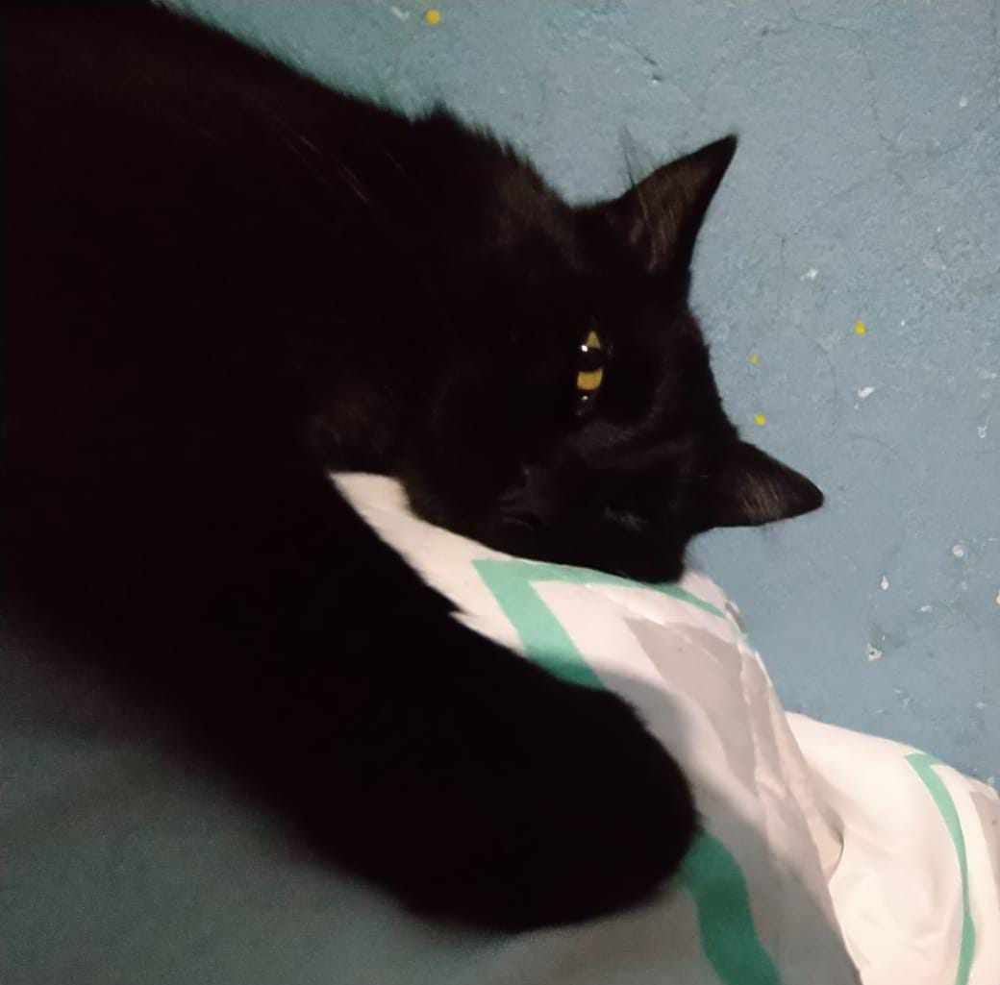
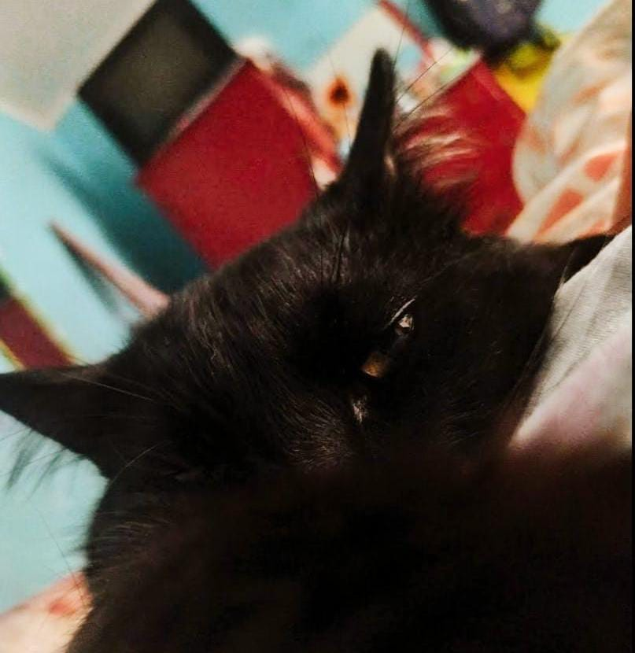

La vida de Osiris
Osiris, un misterioso felino de pelaje negro como la noche, delgado y esbelto, se distingue por su presencia imponente y sus ojos amarillos que resplandecen con una intensidad enigmática. Este gato, nacido en la histórica ciudad de Ayacucho, lleva consigo el encanto de sus orígenes. A pesar de su elegante apariencia, Osiris es conocido por su temperamento medio agresivo, una característica que revela las complejidades de su personalidad forjada en las calles de Ayacucho.
Los ojos amarillos de Osiris parecen contar historias de las travesías que ha vivido en las callejuelas de su ciudad natal. Su pelaje negro, resaltado por una singular mancha blanca en su pecho, agrega un toque de singularidad a su presencia. Nacido en un entorno desafiante, Osiris ha aprendido a valerse por sí mismo desde temprana edad, desarrollando un carácter fuerte y resistente.
Aunque su temperamento puede ser medio agresivo, tras esa fachada se esconde un gato que ha enfrentado la adversidad desde su nacimiento en Ayacucho. La ciudad, rica en historia, ha dejado una marca indeleble en la personalidad de Osiris, quien lleva consigo la esencia de su lugar de origen en cada movimiento y mirada. En la complejidad de su ser, Osiris personifica la lucha y la determinación que caracterizan la vida en las calles de Ayacucho.

Osiris, el gato negro de Ayacucho, es como una sombra que se desliza con gracia por los callejones, llevando
consigo la esencia misteriosa de su ciudad natal. Sus ojos amarillos, cautivadores y penetrantes, parecen
ser la ventana a un mundo secreto de experiencias y sabiduría adquirida en las calles. A pesar de su
delgadez, Osiris irradia una elegancia única, y la mancha blanca en su pecho se convierte en un distintivo
que rompe la uniformidad de su pelaje oscuro.
El medio agresivo temperamento de Osiris es como un
recordatorio constante de las luchas que ha enfrentado para sobrevivir en Ayacucho. La ciudad le ha otorgado
una identidad resistente y fiera, moldeando su carácter de una manera que solo aquellos que han caminado por
sus callejones pueden comprender. En cada rincón de su ser, Osiris lleva consigo la herencia de Ayacucho,
transformándose en un testamento viviente de la resilencia y la belleza que puede surgir de las
adversidades.